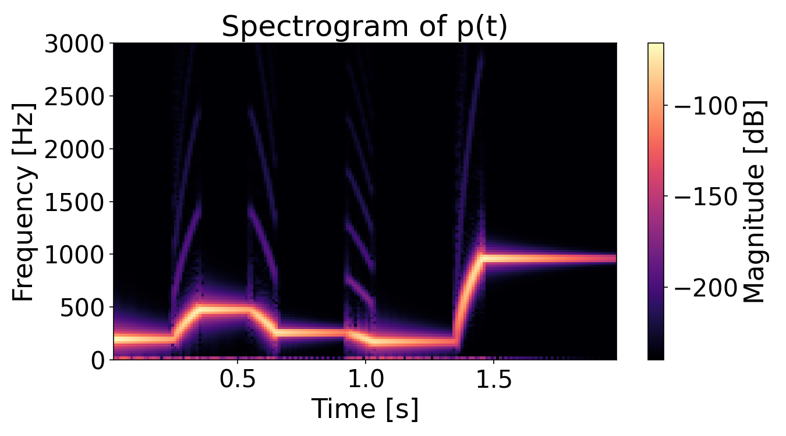
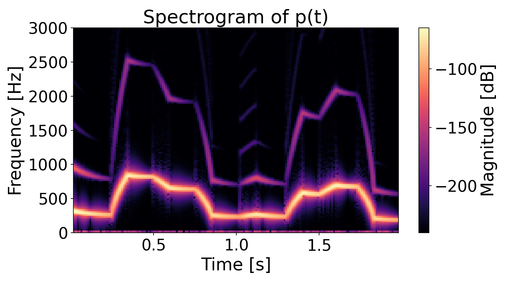
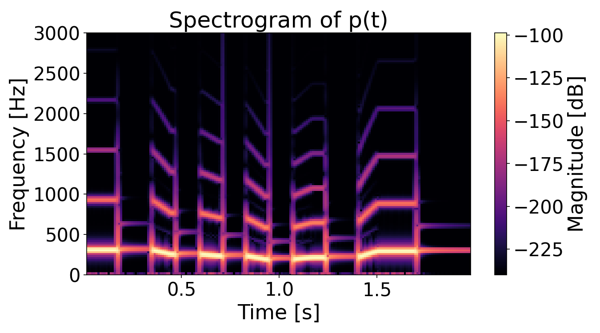
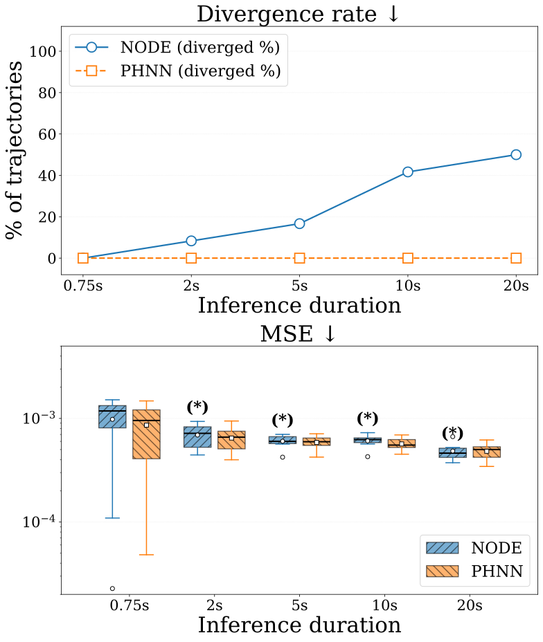
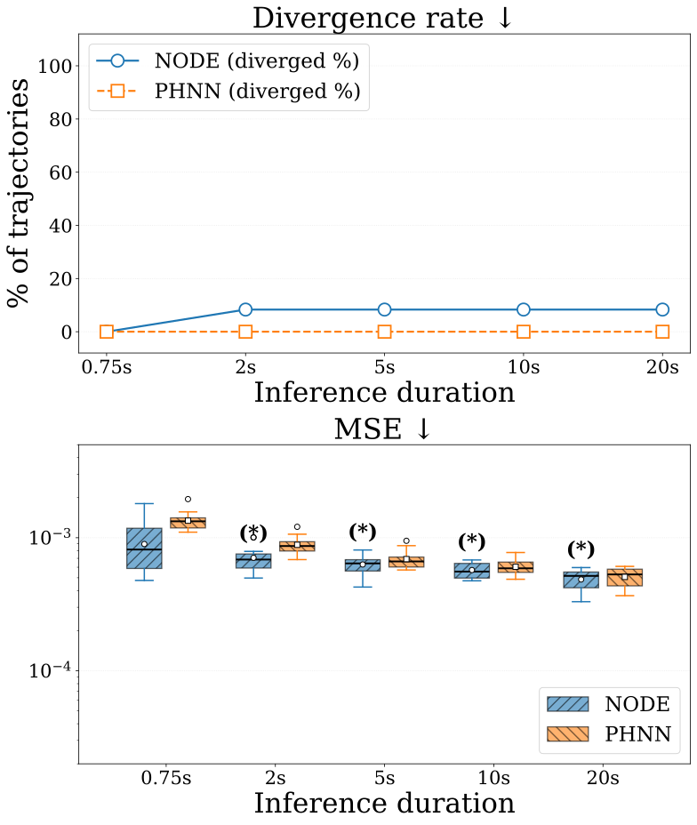
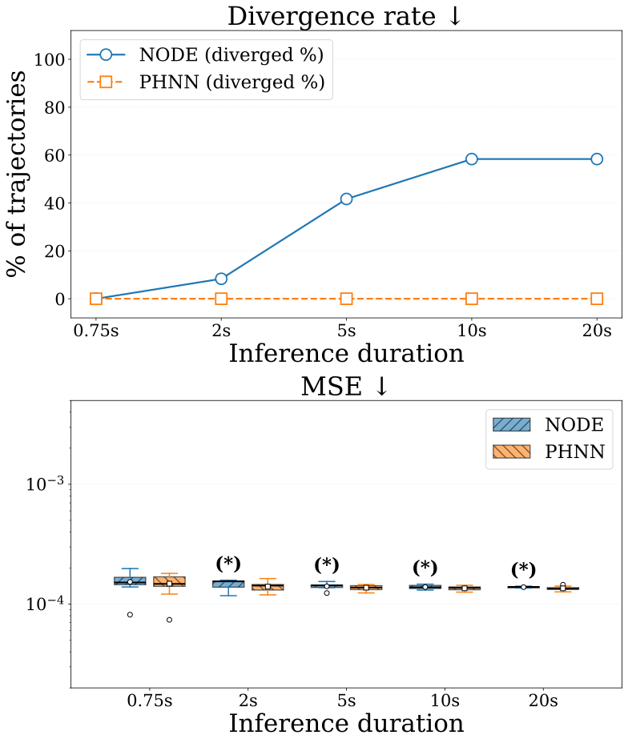
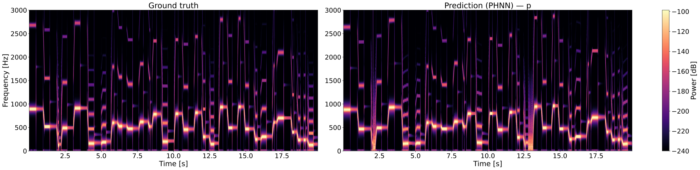

Towards learning minimalistic musical instrument dynamics with port-Hamiltonian neural networks
Submitted to ICASSP 2027 (waiting for decision)
Abstract
Physically structured neural architectures have emerged as a promising approach for learning the dynamics of physical systems by explicitly incorporating known physical principles and constraints into the model, improving generalization, stability, and interpretability compared to purely data-driven methods. Among these, Port-Hamiltonian Neural Networks (PHNNs) model open, dissipative systems from data while preserving fundamental properties such as passivity and power balance. Prior work has investigated PHNNs for learning the dynamics of both free and self-sustained oscillatory systems, but without explicit control over their oscillation frequency. In this work, we extend this framework toward modeling the dynamics of musical instruments, for which explicit frequency control is essential. Using a discrete-gradient integrator to preserve power balance at the discrete level, we show that PHNNs provide more stable long-term predictions than Neural ODEs, at the cost of slower implicit integration. These results establish a proof of concept for learning physically consistent musical oscillators with explicit pitch control.
Context
Port-Hamiltonian systems
Port-Hamiltonian formalism [1]-[2] generalizes Hamiltonian mechanics to multi-physics open systems by explicitly modeling energy exchange with the environment through ports (inputs/outputs) and dissipation. In this work, the considered the input-state-output formulation with feedthrough [3]: \begin{equation} \begin{bmatrix} \dot{\mathbf{x}} \\ \mathbf{y} \end{bmatrix}=(\mathbf{J}(\mathbf{x},\mathbf{u})-\mathbf{R}(\mathbf{x},\mathbf{u}))\begin{bmatrix} \nabla H(\mathbf{x}) \\ \mathbf{u} \end{bmatrix}, \label{eq:PHS-formulation} \end{equation} where $\mathbf{x}\in\mathcal{X}\subset\mathbb{R}^{n_x}$ is the state of the system with an associated Hamiltonian $H:\mathcal{X}\rightarrow\mathbb{R}$ and $\mathbf{u},\mathbf{y}\in\mathbb{R}^{n_u}$ are the input and output of the system, respectively. Additionally, the interconnection matrix $\mathbf{J}(\mathbf{x},\mathbf{u})$ and the dissipation matrix $\mathbf{R}(\mathbf{x},\mathbf{u})\in\mathbb{R}^{(n_x+n_u)\times(n_x+n_u)}$ satisfy $\mathbf{J}=-\mathbf{J}^{T}$ (conservative interconnection) and $\mathbf{R}=\mathbf{R}^{T}\succeq0$ (passivity).
Port-Hamiltonian Neural Networks (PHNNs)
A port-Hamiltonian neural network (PHNN) can implement in its architecture many port-Hamiltonian formulations [3]. In this work, we consider the class of PHNNs that parameterizes the right-hand side of \eqref{eq:PHS-formulation}, modeling $\mathbf{J}(\mathbf{x},\mathbf{u})$, $\mathbf{R}(\mathbf{x},\mathbf{u})$ and $H(\mathbf{x})$ with distinct neural networks. This leads to \begin{equation} \label{eq:dynamics-phnn} \begin{bmatrix} \dot{\mathbf{x}}_{\theta} \\ \mathbf{y}_{\theta} \end{bmatrix}=(\mathbf{J}_{\theta}(\mathbf{x},\mathbf{u})-\mathbf{R}_{\theta}(\mathbf{x},\mathbf{u}))\begin{bmatrix} \nabla H_{\theta}(\mathbf{x}) \\ \mathbf{u} \end{bmatrix}, \end{equation} which describes the dynamics of the PHNN.
Method
Pitch controlled oscillatory systems
General Hamiltonian function
An oscillatory system prototype can be modeled as a general RLC circuit following Eq.\eqref{eq:PHS-formulation}, with Hamiltonian
\[ H(\mathbf{x}) = \frac{p^2}{2L} + \frac{1}{2C(d)}\left(q^2 + k q^4\right) \tag{2}\label{eq:musical-instrument-hamiltonian} \]where $\mathbf{x} = [d, q, p]$ denotes the system's state, $L$ the inductance, $C(d)$ = $\epsilon A/d$ the capacitance $\epsilon = \epsilon_r \epsilon_0$ is the permittivity of the material, $A$ the area of the plates and $d$ the distance between them). The coefficient $k\geq 0$ controls the geometrical nonlinearities. In this model, controlling $d$ enables changing the natural oscillation frequency $f$, which are related by:
\[ f(d) = \frac{1}{2\pi}\sqrt{\frac{1}{LC(d)}} \iff d(f) = 4\pi^2 f^2 \epsilon A L \tag{3}\label{eq:f-d} \]Considered systems
We consider two free oscillating and one self-sustained oscillating systems. Table 1 summarizes how $H(\mathbf{x})$, $\mathbf{J}(\mathbf{x}, \mathbf{u})$ and $\mathbf{R}(\mathbf{x}, \mathbf{u})$ differ in each case. In the case of the self-sustained system, we consider a nonlinear dissipation function such that the system is able to self-oscillate (see [3] for further details).
| Object | Oscillatory system | ||
|---|---|---|---|
| Free oscillating | Self-sustained | ||
| System | $\mathbb{I}$ | $\mathbb{II}$ | $\mathbb{III}$ |
| $H(\mathbf{x})$ | $H(\mathbf{x}) = \frac{p^2}{2L} + \frac{1}{2C(d)}\left(q^2 + k q^4\right)$ | ||
| $k$ | 0 | $>0$ | 0 |
| $\mathbf{J}(\mathbf{x}, \mathbf{u})$ | \[ \begin{bmatrix} 0 & 0 & 0 & 1 & 0 \\ 0 & 0 & 1 & 0 & 0 \\ 0 & -1 & 0 & 0 & -1 \\ -1 & 0 & 0 & 0 & 0 \\ 0 & 0 & 1 & 0 & 0 \end{bmatrix} \] | \[ \begin{bmatrix} 0 & 0 & 0 & 1 & 0 \\ 0 & 0 & 1 & 0 & 0 \\ 0 & -1 & 0 & 0 & 0 \\ -1 & 0 & 0 & 0 & 0 \\ 0 & 0 & 0 & 0 & 0 \end{bmatrix} \] | |
| $\mathbf{R}(\mathbf{x}, \mathbf{u})$ | \[ \alpha \begin{bmatrix} 0 & 0 & 0 & 0 & 0 \\ 0 & 0 & 0 & 0 & 0 \\ 0 & 0 & 1 & 0 & 0 \\ 0 & 0 & 0 & 0 & 0 \\ 0 & 0 & 0 & 0 & 0 \end{bmatrix} \] | \[ \Gamma(\mathbf{x}, \mathbf{u}) \begin{bmatrix} 0 & 0 & 0 & 0 & 0 \\ 0 & 0 & 0 & 0 & 0 \\ 0 & 0 & 1 & 0 & 1 \\ 0 & 0 & 0 & 0 & 0 \\ 0 & 0 & 1 & 0 & 1 \end{bmatrix},~~~~\Gamma(\mathbf{x},\mathbf{u})\geq 0 \] | |



Control design
A control input $\mathbf{u}=[u_1,u_2]$ acts on the system. The first component, $u_1$, is designed to modulate the natural oscillation frequency, while the role of $u_2$ depends on the considered system: for the free oscillators, $u_2$ controls the volume, whereas for the self-sustained oscillator, it determines whether self-oscillations emerge or not.Pitch control ($u_1$): Pitch is controlled by ramping $d$ linearly from its current value to a new target $d+\delta d$ over a time interval $\delta t$. The control $u_1$ is set to the constant slope $\delta d/\delta t$ during the transition, and to zero otherwise. Thus, $d$ remains constant between notes and transitions smoothly to its new value at each onset.
Note that this control modifies the energy of the system when applied. Indeed, if $\mathbf{R}=\mathbf{0}$ and $u_2=0$, \[ \frac{dH}{dt}=\nabla H(\mathbf{x})^T\dot{\mathbf{x}}=\nabla H(\mathbf{x})^T \begin{bmatrix} 0 & 0 & 0 & 1 & 0 \\ 0 & 0 & 1 & 0 & 0 \\ 0 & -1 & 0 & 0 & -1 \end{bmatrix} \begin{bmatrix}\nabla H_d(\mathbf{x}) \\ \nabla H_q(\mathbf{x}) \\ \nabla H_p(\mathbf{x}) \\ u_1 \\ u_2 \end{bmatrix}=\nabla H_d(\mathbf{x})\cdot u_1=\frac{(q^2+kq^4)\epsilon A}{2C(d)^2d^2}u_1, \label{eq: pitch-shift-energy-flow} \] so that the stored power has the same sign of $u_1$. Increasing $d$ ($u_1>0$) injects energy into the system, whereas decreasing it ($u_1<0$) removes energy.
Volume control ($u_2$).
- Free oscillators: $u_2$ acts as an energy regulator, driving the system's energy towards a reference level $H_{\text{ref}}$, compensating for both the energy dissipated during oscillations and the energy injected or extracted during the pitch-control ramp $u_1$. It is introduced as a force, modifying the stored power \[ \dot{H}=\nabla_dH(\mathbf{x})\dot{d}+\nabla_qH(\mathbf{x})\dot{q}+\nabla_pH(\mathbf{x})\dot{p} =\nabla_dH(\mathbf{x})\cdot u_1-\alpha (\nabla_pH(\mathbf{x}))^2-\nabla_pH(\mathbf{x})\cdot u_2, \] where $u_1$ injects/extracts power to change $d$ and there is a fixed energy dissipation due to $\alpha>0$. If we impose exponential convergence of $e=H(\mathbf{x})-H_{\text{ref}}$, so that $\dot{e}=-\frac{1}{\gamma}e$, we obtain \[ -\frac{H(\mathbf{x})-H_{\text{ref}}}{\gamma}=\nabla_dH(\mathbf{x})\cdot u_1-\alpha (\nabla_pH(\mathbf{x}))^2+\nabla_pH(\mathbf{x})u_2, \] from where the expression for $u_2$ \begin{equation} u_2(\mathbf{x},t)=\frac{\frac{1}{\tau}(H(\mathbf{x})-H_{\text{ref}})-\alpha (\nabla_pH(\mathbf{x}))^2+\nabla_dH(\mathbf{x})\cdot u_1(t)}{\nabla_pH(\mathbf{x})}, \label{eq:control-volume-free-oscillations} \end{equation} can be derived. For stability reasons during simulation, we clamp the value of $u_2$ to be in [-3,3]. Below, we show an animation of how $u_1$ and $u_2$ change during the simulation of a trajectory for System $\mathbb{I}$. Note that both controls are only applied when a note is changed.
- Self-sustained oscillators: $u_2$ controls the emergence and maintenance of self-oscillations. To illustrate it, consider System $\mathbb{III}$ oscillating at a natural frequency $f_0$ with associated $d=d(f_0)$, a constant control $u_2$ and $\Gamma(\mathbf{x},\mathbf{u})=\Gamma(w)\geq0,~\forall w$, with $w=\frac{p}{L}+u_2$. When no pitch control is applied, the dynamics of this system can be written as \[ \begin{cases} \dot{q}=\frac{p}{m} \\ \dot{p}=-\frac{q}{C(d_0)}-\Gamma(w)w \end{cases}~~~~, \] with a unique equilibrium point $(q^{*},p^{*})=\left(-C(d_0)\Gamma(u_2)u_2,0\right)$ and a Jacobian matrix \[ J_{f}(q,p)=\begin{bmatrix} 0 & \frac{1}{L} \\ -\frac{1}{C(d_0)} & -\frac{1}{L}\left(\Gamma'(w)w+\Gamma(w) \right) \end{bmatrix}. \] We can now show how, for specific values of $u_2$, the system self-oscillates or not. To do so, we apply the Poincaré-Bendixson theorem [3], which only requires the system to have a unique unstable equilibrium point in order for the dynamics to converge to a limit cycle. The stability of the equilibrium point depends on the determinant and trace of the Jacobian matrix evaluated at $(q^{*},p^{*})$ \[ J_f(q^{*},p^{*})=\begin{bmatrix} 0 & \frac{1}{L} \\ -\frac{1}{C(d_0)} & -\frac{1}{L}\left(\Gamma'(u_2)u_2+\Gamma(u_2) \right) \end{bmatrix}. \] In order for $(q^{*},p^{*})$ to be unstable, both the determinant and trace of $J_f(q^{*},p^{*})$ must be positive [3]. The first condition is direct as \[ \text{det}(J_f(q^{*},p^{*}))=\frac{1}{LC(d_0)}>0. \] For the second one, \[ \text{tr}(J_f(q^{*},p^{*}))=-\frac{1}{L}\left(\Gamma'(u_2)u_2+\Gamma(u_2)\right)>0, \] which defines the set \[ \mathcal{U}_{\text{limit-cycle}}=\{u_2\in\mathbb{R},s.t.~ \Gamma'(u_2)u_2+\Gamma(u_2)<0 \} \] of constant controls $u_2$ for which self-oscillations emerge. For values outside of $\mathcal{U}_{\text{limit-cycle}}$, the equilibrium point is stable, with trajectories converging towards $(q^{*},p^{*})$. In the theory of dynamical systems, the lost of stability induced by a change in a control parameter (in our case $u_2$) is referred to as a Hopf bifurcation [3].
PHNN model
Formulation
We consider a PHNN model \eqref{eq:dynamics-phnn} with the following constrains: $\mathbf{J}_{\theta_J}(\mathbf{x},\mathbf{u})$ is enforced to be skew-symmetric, parameterizing a strictly upper-triangular matrix $\mathbf{K}_{\theta_K}(\mathbf{x},\mathbf{u})$ and imposing \[ \mathbf{J}_{\theta_J}(\mathbf{x},\mathbf{u})=\mathbf{K}_{\theta_K}(\mathbf{x},\mathbf{u})-\mathbf{K}_{\theta_K}(\mathbf{x},\mathbf{u})^T; \] $\mathbf{R}_{\theta_R}(\mathbf{x},\mathbf{u})$ is formed using a Cholesky decomposition \[ \mathbf{R}_{\theta_R}(\mathbf{x},\mathbf{u})=(\mathbf{L}_{\theta_L}(\mathbf{x},\mathbf{u}))^T \mathbf{L}_{\theta_L}(\mathbf{x},\mathbf{u}), \] which guarantees symmetric and positive semi-definiteness by construction; and, lastly, the Hamiltonian $H_{\theta_H}(\mathbf{x})$ is represented as \[ H_{\theta_H}(\mathbf{x})=\mathbf{q}^2H_{\theta_{H_1}}(\mathbf{x})+\mathbf{p}^2H_{\theta_{H_2}}(\mathbf{x}), \] with $H_{\theta_{H_1}}(\mathbf{x})\geq 0$ and $H_{\theta_{H_2}}(\mathbf{x})\geq 0$, which guarantees $H_{\theta_H}(\mathbf{x})\geq0$ and $H_{\theta_H}(d,0,0)=0$.
Time discretization
Let $\Delta t=1/f_s$ and $f_s$ denote the discretization sampling rate. We avoid modeling $\dot{\mathbf{x}}$ directly, as state derivatives are typically unavailable in real-world measurements, and instead learn the discrete-time map from $\mathbf{x}_n$ to $\mathbf{x}_{n+1}$. To discretize \eqref{eq:dynamics-phnn}, we follow [4] and use: \begin{equation} \frac{\mathbf{x}_{n+1}-\mathbf{x}_n}{\Delta t}=(\mathbf{J}_{\theta_J}(\mathbf{x}_{n+\frac{1}{2}},\mathbf{u}_{n+\frac{1}{2}})-\mathbf{R}_{\theta_R}(\mathbf{x}_{n+\frac{1}{2}},\mathbf{u}_{n+\frac{1}{2}})\begin{bmatrix} \overline{\nabla}_{\mathbf{x}}H_{\theta}(\mathbf{x}_{n+\frac{1}{2}}) \\ \mathbf{u}_{n+\frac{1}{2}}, \end{bmatrix}, \label{eq:discretization-dg} \end{equation} where $\mathbf{x}_{n+\frac{1}{2}}=(\mathbf{x}_{n+1}+\mathbf{x}_n)/2$, $\mathbf{u}_{n+\frac{1}{2}}=(\mathbf{u}_{n+1}+\mathbf{u}_n)/2$ and $\overline{\nabla}_{\mathbf{x}}(\cdot)$ denotes the Gonzalez discrete gradient (DG) [5]. This guarantees power-balance preservation during time discretization.
Training loss
A natural way to train a PHNN is to consider the discrepancy between the predicted and the ground-truth next state \begin{equation} \mathcal{L}_{\text{disc}}=\|\hat{\mathbf{x}}_{n+1}-\mathbf{x}_{n+1}\|_1. \end{equation} However, since $\hat{\mathbf{x}}_{n+1}$ is obtained implicitly through the DG update, computing it during training would require solving the associated root-finding problem at every step and backpropagating through its iterations, which is very expensive. To avoid this, we exploit the inverse-explicit property [6] of the DG: since $(\mathbf{x}_n,\mathbf{x}_{n+1},\mathbf{u}_n,\mathbf{u}_{n+1})$ are known from data at training time, $\mathbf{f}_{\theta,DG}$ can be evaluated explicitly. This allows us to instead train on the residual of the discretized dynamics, \begin{equation} \mathcal{L}_{\text{DG}}=\left\|\frac{\mathbf{x}_{n+1}-\mathbf{x}_n}{\Delta t}-\mathbf{f}_{\theta,DG} \right\|_1 \end{equation} without requiring an iterative solver during training. The root-finding algorithm is only needed at inference time, when generating trajectories. Similarly to [7] , we include the output loss on the training, defining the following PHNN loss, \[\mathcal{L}_{\text{PHNN}} = \mathcal{L}_{\text{DG}}+ \left\| \mathbf{y}_{n+\frac{1}{2}} - \mathbf{y}_{\theta,n+\frac{1}{2}} \right\|_1\] where $\mathbf{y}_{n+\frac{1}{2}}$ and $\mathbf{y}_{\theta,n+\frac{1}{2}}$ denote the ground-truth and predicted outputs, respectively, evaluated at the midpoint.
Normalization
Prior to training, we normalize the state and control variables following a similar procedure to the one described in [8]. We define $\mathbf{D}$ and $\mathbf{S}_u$ as diagonal matrices \[ \mathbf{D}=\begin{bmatrix} \text{std}(x_1) & 0 & \cdots & 0 \\ 0 & \text{std}(x_2) & \ddots & \vdots \\ \vdots & \ddots & \ddots & 0 \\ 0 & \cdots & 0 & \text{std}(x_{n_x}) \end{bmatrix},~~~~~~~ \mathbf{S}_u=\begin{bmatrix} \text{std}(u_1) & 0 & \cdots & 0 \\ 0 & \text{std}(u_2) & \ddots & \vdots \\ \vdots & \ddots & \ddots & 0 \\ 0 & \cdots & 0 & \text{std}(u_{n_u}) \end{bmatrix} \] whose entries are the componentwise empirical standard deviations of the training states and inputs, respectively; and we set \[ \tilde{\mathbf{x}}=\mathbf{D}^{-1}\mathbf{x},~~~~~~~\tilde{\mathbf{u}}=\mathbf{D}_u^{-1}\mathbf{u}. \] The time variable $t$ is normalized as \[\Delta\tilde{t}=\frac{\Delta t}{\tau},\] where the time scale $\tau$ is selected so that \[\mathbf{\xi}=\frac{\tilde{\mathbf{x}}_{n+1}^{\text{data}}-\tilde{\mathbf{x}}_n^{\text{data}}}{\Delta \tilde{t}}\] has unit overall standard deviation, with $\tilde{\mathbf{x}}_n^{\text{data}}$ denoting the normalized state at time step $n$ in the dataset. This leads to \[ \text{std}(\mathbf{\xi})=\text{std}\left(\frac{\tilde{\mathbf{x}}_{n+1}^{\text{data}}-\tilde{\mathbf{x}}_n^{\text{data}}}{\Delta \tilde{t}}\right)=1 \longleftrightarrow \tau=\frac{1}{\text{std}\left(\frac{\tilde{\mathbf{x}}_{n+1}^{\text{data}}-\tilde{\mathbf{x}}_n^{\text{data}}}{\Delta t}\right)}. \] Lastly, the output is normalized as \[\tilde{\mathbf{ }y}=\tau\mathbf{S}_u\mathbf{y}.\] This follows from requiring that the energy exchanged through the external port be the same in the original and normalized variables $\tilde{u}^T\tilde{y}\cdot \Delta\tilde{t}=u^Ty\cdot \Delta t$. All three normalization quantities ($\mathbf{D},\mathbf{S}_u,\tau$) are estimated on the training split only and are later reused for the test. The trajectories are inferred auto-regressively with normalized space and time and then converted to the original one via $\mathbf{x}=\mathbf{D}\tilde{\mathbf{x}}$.
Experiments
Data generation
For each oscillatory systems, the dataset consists of $N$ simulated trajectories of duration $D$. All trajectories start at $\mathbf{x}_0\!=\![\epsilon A/C_0,0,p_0]$, where $C_0\!=\!4\pi^2Lf_0^2$, $f_0\sim\mathcal{U}(f_{\text{min}},f_{\text{max}})$, and $p_0\!=\!\sqrt{2L}$, so that $H(\mathbf{x}_0)\!=\!1J$. For pitch control, we then sample a sequence of $ n_{\text{notes}}\!\sim\!\mathcal{U}(n_{\text{min}},n_{\text{max}})$, each note having a frequency $f_{note}\!\sim\! \operatorname{LogUniform}(f_{\min},f_{\max})$ and a duration $d_{note}\! \sim\!\mathcal{U}(2\delta t,D/n_{\text{notes}})$. Finally, trajectories are computed discretizing \eqref{eq:PHS-formulation} using DG.| Parameter | Train | Test |
|---|---|---|
| Number of trajectories, $N$ | 64 | 12 |
| Simulation duration, $T$ | 2 s | 20 s |
| Min/max number of notes, $[n_{\text{min}},n_{\text{max}}]$ | [4, 8] | [20, 40] |
| Min/max natural frequency, $[f_{\text{min}},f_{\text{max}}]$ | [140, 1000] Hz | |
| Transition time, $\delta t$ | 0.1 s | |
| Min/max note duration, $[d_{\text{min}},d_{\text{max}}]$ | $[2\delta t,\,D/n_{\text{notes}}]$ s | $[2\delta t,\,1]$ s |
| $(L,\epsilon,A)$ | (0.03 H, 0.5 m2, 3$\epsilon_0$) | |
| Reference energy, $H_{\text{ref}}$ | 1 J | |
| Sampling rate, $f_s$ | 24 kHz | |
Training details
We train a PHNN on $\mathcal{L}_{\text{PHNN}}$ with data generated for the systems in Table 1. Each subnetwork is an MLP with 3 hidden layers of 100 units each. The PHNN performance is compared with a NODE model trained on $\mathcal{L}_{\text{disc}}$ in which the state derivative $\dot{\mathbf{x}}$ is approximated directly with an unstructured MLP (3 hidden layers, 200 units), integrated via explicit midpoint Runge-Kutta to match the accuracy order of the DG. Both models were trained for 500k steps (batch size 32, Adam with LR warm-up followed by cosine decay from 1e-3). We report Mean Squared Error (MSE) on predicted state trajectories as the test metric.
Results and discussion
For each system, we show the long horizon stability and accuracy of both models for the test trajectories.



In every scenario, NODE exhibits numerically divergent behavior, with
predicted states reaching non-finite values for an increasing number of trajectories as the prediction length increases,
while PHNN predictions never diverge. The rate of diverged trajectories increases with prediction length for NODE, reaching
roughly $45-60\%$ at $20s$ in Systems $\mathbb{I}$ and $\mathbb{III}$ and 10$\%$ in System $\mathbb{II}$.
This indicates that the combination of a PHNN structure and a power-preserving time discretization guarantees long-term stability
compared to an unconstrained NODE, whose predictions are prone to numerical instability over long horizons.
As for the MSE comparison, it should be read carefully: asterisked boxplots indicate that some trajectories diverged.
Despite having more valid trajectories, PHNN accuracy remain stable over time, offering a better stability-accuracy tradeoff.
From a qualitative viewpoint, we also include the spectrogram of the generated wavform, and confirms
that PHNN prediction remains accurate in both frequency and energy.

Conclusion
The results confirm that PHNN's structural constraints, preserved at discrete time with the use of a DG method, offer a more stable and reliable long-horizon prediction than a NODE. This robustness, however, comes at a computational cost: the DG method is implicit and slow to converge, limiting its practicality for real-time applications. Future work should therefore explore explicit alternatives that preserve PHNN's stability guarantees without this overhead. Even though this method should still be validated by learning the dynamics directly from real experimental data rather than simulated trajectories alone, this work represents, in itself, a proof of concept for how the PHNN framework can be leveraged to learn general pitch-controlled oscillating systems that behave as minimalistic musical instruments.
References
- B.M. Maschke et al., "An intrinsic hamiltonian formulation of network dynamics: non-standard poisson structures and gyrators," Journal of the Franklin Institute, 1992.
- A. Van Der Schaft et al., "Port-Hamiltonian systems theory: An introductive overview," Foundations and Trends in Systems and Control, 2014.
- S. Strogatz et al., "Nonlinear dynamics and chaos: with applications to physics, biology, chemistry and enginerring," 3rd Edition, CRC press, 2024.
- M. Linares et al., "Controlled oscillation modelling using port-Hamiltonian neural networks," Physica D: Nonlinear Phenomena, 2026.
- O. Gonzalez et al., "Time integration and discrete hamiltonian systems," Journal of Nonlinear Science, 1996.
- E. Celledoni et al., "Learning dynamical systems from noisy data with inverse-explicit integrators," Physica D: Nonlinear Phenomena, 2025.
- K. Cherifi et al., "Nonlinear port-hamiltonian system identification from input-state-output data (iso-phnn)," Physica D: Nonlinear Phenomena, 2026.
- A. El Messaoudi et al., "Sparse symbolic identification of nonlinear port-hamiltonian systems using kolmogorov-arnold networks," Under review, 2026.